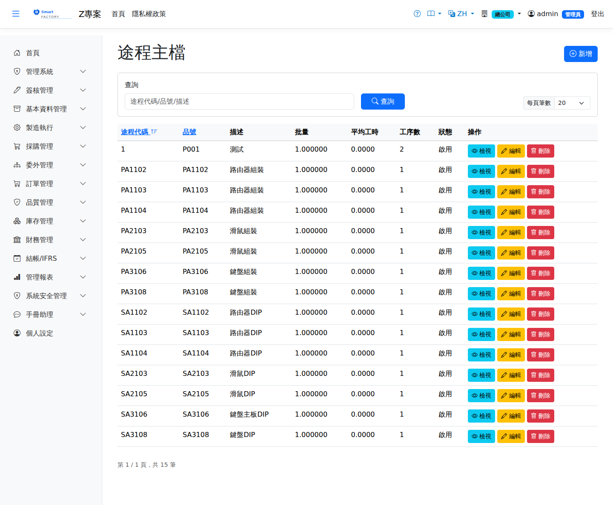

途程主檔Routing Master
路由：/Routing | 產品製程工序與 BOM 用料定義Route: /Routing | Defining the operations and BOM material of a product
途程定義產品的加工順序（工序）與每道工序的用料（BOM）。工單建立時自動複製途程內容為工單工序與用料快照，因此修改途程只影響之後新建的工單。每道工序可設定工作中心、標準工時、QueueTime/MoveTime（MRP 前置期倒推用）、模具代碼與是否需要 IPQC 製程檢驗。A routing defines the sequence of operations for a product and the material each operation uses (the BOM). When a work order is created the routing is copied into it as a snapshot of its operations and material, so changing a routing only affects work orders created afterwards. Each operation can carry a work center, a standard time, QueueTime and MoveTime (used when MRP works the lead time back), a tooling code and a flag for whether IPQC in-process inspection is required.

途程主檔畫面截圖（示意，實際欄位/資料依權限與查詢條件而異）Routing screenshot (illustrative; actual fields and data vary by permission and query criteria)
查詢Search
1
查詢列輸入條件後點「查詢」；欄位標題可點擊排序，清單下方有分頁導航。Enter your criteria on the query bar and click "Search"; column headers can be clicked to sort, and the paging controls sit below the list.
作業流程Process
建立途程Create routing
1
點「新增」建立途程表頭，選擇適用產品。Click "Add" to create the routing header and choose the product it applies to.
2
逐道加入工序：選工作中心、填標準工時（UnitTime）、準備工時，視需要填模具代碼與「需要檢驗」旗標。Add the operations one by one: choose the work center, enter the standard time (UnitTime) and the setup time, and where needed the tooling code and the "inspection required" flag.
3
在工序下維護 BOM 用料明細：料號、標準用量、發料倉。Maintain the BOM material lines under each operation: item, standard usage and issuing warehouse.
4
儲存後（視設定）送審，核准後工單即可引用。After saving it goes for approval (depending on the settings); once approved, work orders can use it.
工序「外包」勾選已停用：途程上不能再把工序設為委外，MRP 也不再依舊資料展開委外派工或委外建議（一律當廠內工序）。日常固定外包的那一段，請建成半成品品號（MRP 模式「委外」），由 MRP 產生它自己的委外工單；臨時把某道工序外包，請在排程畫面的派工面板按「轉為委外」。The operation "Outsource" tick box is no longer available: an operation can no longer be set as outsourced on the routing, and MRP no longer creates outsourced dispatches or outsource suggestions from older data (such operations are treated as in-house). For a stage that is always subcontracted, make it a semi-finished product (MRP mode "Outsource") so MRP creates its own outsourced work order; to subcontract one operation as a one-off, use "Convert to Outsource" in the dispatch panel on the scheduling screen.
欄位說明Field reference
途程表頭Routing header
| 欄位Field | 說明Guide |
|---|---|
| 途程代碼Routing ID | 必填Required 唯一識別，建立後不可修改Unique identifier; cannot be changed after creation |
| 品號Item | 此途程適用的成品／半成品；多階展開時以此判斷是否為自製件Finished or semi-finished item the routing applies to; a multi-level explosion uses it to decide whether the item is made in house |
| 描述Description | 途程名稱或用途說明Routing name or description |
| 批量Lot size | 標準批量。工時試算以此批量為基準攤提準備時間Standard lot size. Setup time is spread over this lot size when hours are estimated |
| 緩衝天數Buffer Days | 排程倒推時額外預留的天數，用於吸收不確定性Extra days allowed when back-scheduling, to absorb uncertainty |
| 平均工時Average hours | 整條途程的平均前置工時，供 MRP 粗估交期使用Average lead time of the whole routing, used by MRP for a rough delivery estimate |
| 版本Version | 工程變更控管用的版本識別Version identifier used for engineering change control |
| 生效起日 / 生效迄日Effective from / to | 途程的有效期間（含起訖日）；留空為不限。多階展開以查詢當日判斷是否有效Effective period of the routing (inclusive); leave blank for no limit. The multi-level explosion judges validity on the query date |
| 狀態（啟用）Status (active) | 停用或不在生效區間的途程一律視為無效，該品號在多階展開中被當成採購件A routing that is inactive or outside its effective period counts as invalid, and the item is treated as a purchased part in the multi-level explosion |
工序明細Operations
| 欄位Field | 說明Guide |
|---|---|
| 序號Seq | 必填Required 工序執行順序，決定前後工序的相依關係Order in which the operations run, which sets the dependency between them |
| 名稱Name | 工序名稱（如 DIP、組裝、測試）Operation name (e.g. DIP, assembly, test) |
| 工作中心Work Center | 必填Required 該工序執行的工作中心，決定產能與費率Work center that performs the operation, which sets the capacity and the rate |
| 移轉方式Transfer | 連續（Continuous，前工序邊做邊移轉）／批量（Batch，滿一個移轉批量才移轉）／整單（WholeOrder，整批完工才移轉）Continuous (moved on as the previous operation produces) / Batch (moved on once a transfer batch is full) / WholeOrder (moved on only when the whole order is finished) |
| 移轉批量Transfer Qty | 移轉方式為「批量」時，每次移轉的數量Quantity moved each time when the transfer mode is "batch" |
| 開工容器 / 完工容器Start container / Finish container | 工序進出料使用的標準容器；留空表示不以容器轉移Standard container used to move material in and out of the operation; leave blank if containers are not used |
| 準備時間Setup time | 換模、換線等生產前準備時間，每張派工單只計一次（時間單位可另設秒／分／時）Preparation time before production such as changing tooling or lines, counted once per dispatch (the time unit can be set to seconds, minutes or hours) |
| 單位時間Unit Time | 生產一個良品所需的標準工時，乘上數量即為加工時間Standard time to produce one good piece; multiplied by the quantity it gives the processing time |
| 良率Yield | 該工序投入→良品的產出良率（%），預設 100。MRP 以各階累積良率回推投產量Yield from input to good output at this operation (%), 100 by default. MRP works the release quantity back from the cumulative yield of every level |
| SOP | 作業標準書編號，供現場查閱Work instruction number, for reference on the shop floor |
工序用料（料表）Operation material (BOM)
| 欄位Field | 說明Guide |
|---|---|
| 序號Seq | 用料行序Material line seq |
| 品號Item | 必填Required 該工序要領用的料件Item to be issued for the operation |
| 數量Count | 必填Required 生產一個（或一個批量）所需的用量Usage needed to produce one piece (or one lot) |
| 單位UOM | 用料的計量單位Unit of measure of the material |
| 損耗率%Scrap % | 製程損耗的加成比例，需求量以此放大Uplift for process loss, by which the demand is increased |
| 下角率%Offcut % | 裁切剩餘無法再利用的加成比例，與損耗率同為外加法一併放大需求量Uplift for offcuts that cannot be reused; like the scrap rate it is added on top and increases the demand |
相關畫面Related screens
工序的搬運時間與等候時間是An operation's move time and queue time are 這道工序做完、到下一道開工之間the time between this operation finishing and the next one starting的時間，影響 MRP 倒推的開工日與排程的工序間隔。系統每晚 02:00 依近 90 天實際報工統計; they affect the start dates MRP works back to and the gaps the scheduler leaves between operations. Every night at 02:00 the system works out a 等候時間建議值suggested queue time：同一張工單前一道下工到下一道上工的間隔，只算工作日曆上的上班時間（夜間、假日、休息不算），取中位數後扣掉本工序的搬運時間；首道工序之前不統計，樣本少於 5 筆不給建議。編輯工序時，等候時間欄位下方會顯示「建議 X（近 90 天實際報工 N 筆的中位數）」，按「套用」只會把值填進欄位， from the last 90 days of production reports: the gap from the previous operation's last clock-out to the next operation's first clock-in on the same work order, counting only working time on the work calendar (nights, holidays and breaks are excluded), taking the median and deducting this operation's move time. Nothing is calculated before the first operation, and there is no suggestion with fewer than 5 samples. When you edit an operation, the queue time field shows "Suggested X (median of N actual reports over the last 90 days)"; clicking "Apply" only fills in the field, and 存檔途程後才生效it takes effect only when you save the routing——系統不會自動改途程。 — the system never changes routings by itself.
注意：Note:修改途程不會回寫既有工單；已投產工單如需變更製程，請作廢重開工單。 Changing a routing does not update existing work orders; to change the process on a work order that has been released, void it and open a new one.